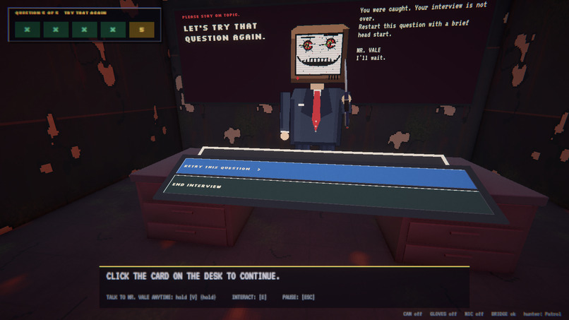
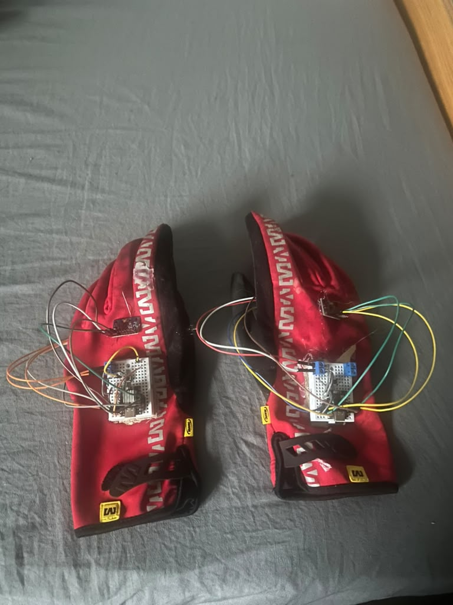

Breathe.exe
HackRU26 | Best Use of Presage Winner
A Perfectly Normal Interview

Breathe.exe is a horror game built at HackRU26 that plays out as a job interview. Instead of a keyboard alone, the game reads your body: a webcam measures your pulse, sensor gloves track your hands, and a microphone listens to your voice. Stay calm and the interview goes smoothly. Panic, and the game notices.
Keep Your Composure
The interviewer, Mr. Vale, asks a series of questions while the game monitors your stress in real time. As long as your vitals stay steady, the office stays bright and ordinary. When your heart rate spikes or your hands start shaking, the room decays, Mr. Vale's face turns monstrous, and you're forced to restart the question. Our use of Presage's camera-based vital sensing to drive this mechanic won the Best Use of Presage award.


Controller

The controllers are a pair of gloves fitted with sensors and a small breadboard circuit on the back of each hand. They stream hand movement to the game, so a shaky or tense grip feeds into the player's stress level alongside the webcam pulse reading and the microphone.
Demo
A full playthrough of Breathe.exe, showing the interview, the live stress readings, and what happens when the player loses their cool.